Archives : 2010-07
一场夭折的“怀旧之旅”。 @ Jul 31, 2010
据说绿皮火车即将消失，一行六人准备星期六下午乘火车南站至西站的列车，为了凑着某人的时间，尽量安排在星期六的下午，结果人家还是抽不出时间来。于是我们剩下的四人在火车南站集中，哦，天呐，这个平时冷清又冷清的中华门火车站候车室塞满了豆瓣们，以及真文艺、伪文艺、小文艺和老文艺们，几乎清一色端着或数码或胶片相机，还有举着摄象机的。。。这么多文艺人同时出现还是蛮壮观的，这情形比天气还热，让人窒息。
7102次延迟，延迟，延迟到我们无法再继续等待的地步，因为每个人身上的衣服几乎被汗浸湿，我甚至能感觉到汗珠从后背流向腰际的过程。候车室里的空调被房间里的人群捂温了，几乎成了摆设。听说前一天7102次晚点，晚上8点才到。。。人群中不停擦汗的我们，决定放弃这次“怀旧之旅”。
汗，我很羞愧，瞧瞧人家文艺的多么萌啊，我这么个既不文艺也不爱扎堆滴人，为何鬼使神差到了这里？不搭调啊，也不想搭调啊。

光光说的挺对的，豆瓣上全是文艺青年，小孩子多。这些文艺孩子们如今时髦地穿起了小时侯我们穿的那种白球鞋，扫一眼过去，好几双，这也是扎堆的一种，南京文艺青年的习惯？有位穿着小白鞋，特潮的男生问：“你有豆瓣吗？”
“没有。”
“那你在XICI玩吗？”
“不玩。”
“那你在哪儿玩呢？”
“在家。”。。。


皮质书包款+胶片机，在我看来这是圈子的象征。


史上最便宜的火车票，史上是不是最慢的火车，不确定。但我知道从中华门到下关乘汽车也用不了2小时。即使同行的人再文艺，我们也经受不了高温的折磨，就此告别。

夭折之旅，总要在别处得到平衡，晚饭豪吃龙虾喝啤酒，没啥说的。问问制作的冰镇乌梅汤，用啤酒瓶装了赶到火车站送给我们，晚饭的时候我们全给干了。收到问问借给我的书《送你一颗子弹》，其实我已经被下午的酷热与扎堆的文艺豆瓣们给击中了。现在，我特有兴趣知道豆瓣们如何度过这个下午的？
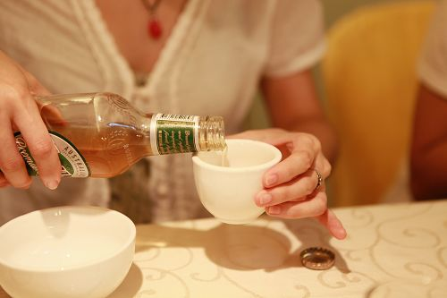

梦想花园@杂志图片 @ Jul 30, 2010


DRESS BLOG @ Jul 30, 2010
ZARA长T，鞋子和腰带统一颜色，会更好。
其实，我今天依然穿着夹趾平底鞋。

梦想花园 @ Jul 29, 2010
喜欢傍晚天色还没有完全暗下来，遛狗时路过人家的小院子，看到喜欢的就故意停下来装作不经意地瞅两眼。有些院子被自家种植的树挡住了视线，在这些或清楚或模糊的印象中，有两家院子深得我心。
一家从叠加别墅即将转移到同小区的联排居住，新院子种了一些金桂，听男主人说只花了7000元打理花草植物，但我更爱他家的老院子。老院子的一边种着一棵红色的枫树，叶子似乎常年都是红色，到了夏季黯淡些。另一边是棵绿树叶的龙爪树，这两棵树体形迷你又结实，不象树更象是盆景里的植物。翠绿的草坪里嵌着许多米色的鹅卵石拼接成的小径，大阳台下一排各色花朵，开花的时候各自为阵，一朵是一朵的，而不是繁花簇锦。挑高大阳台上一对白色的花园椅和一张桌子，为整个花园突出了主题。角落里有一座鱼池，里面真的养了红色金色的鲤锦，上面没有封上铁丝网，似乎并不担心野猫。干净简洁又充满自然气质的院子，很精致。
另一家的院子里有原木的花园桌椅和植物架，草坪肥美，种植在花盆里的植物，外面套着木制的装饰盆，散落在院子的角落里，偶有一两个陶制小人儿从草坪里探出彩色的身体，同样是鹅卵石的小径将主人从家中引向户外休闲处。每次视线都不能顺利将里面一探究竟，只能将看到的景物拼凑在一起想象。即使这样，院子里面的摆设与植物形成的默契，让人每次路过都想再看一眼。
环境代给人的满足感不亚于室内装修，生长美好的植物以及恰倒好处的庭院设计透露着这家人的内心与生活情趣，让路过的人身心也得到了享受。我的总结是，院子里的植物不能泛滥，一定要有选择的搭配，要让院子看上去更精神，就象人的头发经常需要打理是同一个概念。无论有没有属于自己的院子，每个热爱生活的人心中都有自己的梦想花园，哪怕只是一个窗台，哪怕在厨房的洗手池边上，也可以种点花草伴随我们一同生活。
换盆的荷花，荷叶越长越多，继第一朵荷花消失后，第二朵体形更大的荷苞长出来，喜人。


荷花的花期短，从盛开到凋零仅仅两三天的时间，花瓣脱落后，剩下这个，象女性的胸部，又象是外星人的大眼睛。它比其他莲蓬都要大，莲子却只有两颗。属于发育比较奇特的。有人说从这里看到了三张脸：惊愕的，微笑的，发愣的。

墙根下的薄荷长势迅猛，刚搬回家时上面没有一片叶子，从7月10日到今天，半个多月就长成这样了。它似乎是株吃素的植物，只需要喝水，就能开心的生长。

老爸给的一串红，这两天冒出红色的花朵，这花难道不是要到秋季才开的吗？

刚到我家时它还没有这么高，渐渐长成这样，与它所在的花盆极不相称。我就想把这只长叶子不见花朵的一串红送还给我爸。结果这两天顶上冒出花朵，虽然小小的，但却让人无法忽视。原来它拼命的长啊长啊，是为了迎接花朵们的到来？
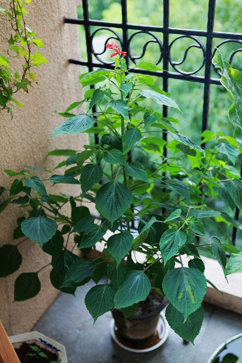
DRESS BLOG @ Jul 28, 2010
基本款体恤+棉麻侉裤+包后跟夹趾凉鞋
今夏，裤装多于裙。
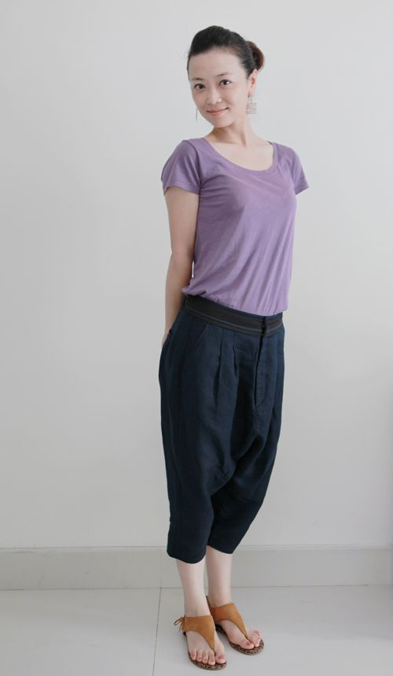
观影《Leatherhead》 @ Jul 28, 2010
电影《Leatherhead》以1925年美国职业橄榄球联赛还处于刚刚成形阶段为背景，Renée Zellweger和George Clooney主演，两人都是演技派，Renée Zellweger因其形象怎么演都是一个村妇，唇色苍白的George Clooney，给人感觉有胃病，由此还会联想到口气等等，这两位演员，谈不上喜欢。但这部电影的台词让人喜欢，1925年的美国，即使打架斗殴绅士作派令人惊讶。
Renée Zellweger出演的记者得到一些内幕消息，并且公之于众，看着都觉得残忍。不过报道橄榄球星的丑闻也就算是娱乐新闻。早晨看围脖，有消息称经济观察报某记者遭通缉，不知是真是假？中国记者更多的是吃喝混拿，对吗？有些跟流氓也没什么区别，不过是披着体面的外衣。美国电影反映出的媒体职场是从记者升职到编辑，我国恰恰相反。老天是不是会多些仁慈保佑那些“真记者们”？
DRESS BLOG @ Jul 27, 2010
也许搭配黑色鞋更协调，但这双今夏最爱的平底鞋，虽是皮质，却极其柔软。
出勤率较高。
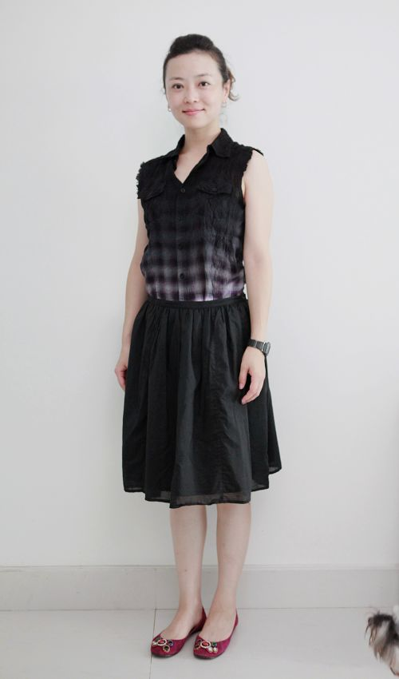
简单也好。 @ Jul 26, 2010
肉末、香菇和胶瓜丁，炒出来，夹在窝窝头里，就着西红柿鸡蛋烫饭，晚饭也就解决了。
夏季的伙食在没有太多热情烹饪的时候，简单也好。
话说巴基斯坦邻居，经过无意中的观察，发现这儿就是众多巴基斯坦IT者的食堂，跟俺们90年代外派常驻机构也带厨师一样。这位黑胡须的巴基斯坦厨师，中午还要去送饭，用那种钢管状的手推车，无论烈日还是大雨，都会推着锅碗外出送往不可知的地点。他自个儿在家时，常常播放奔放又高昂的巴基斯坦流行歌曲，干活也有劲儿。每天闻着各种美妙的烹饪气味儿，真想去搭个伙儿。周末见一群巴基斯坦男人在邻居家的卡宴Turbo S车前拍照留影，这情形跟出差国外的同事在豪车前留影一个劲儿，第三世界国家的人民果真质朴的阔爱。以及，他们居然很怕狗，见着就让。
这两天睡眠质量极其差，夜里经常醒。星期一早晨去上班，头疼得厉害，为此午睡一小时，闭上眼睛，脑子却还是清醒的。看到JM们有人最近睡眠也不好，是季节原因吗？


**********************@7月27日**************************
香菇胶瓜肉沫拌白米饭+配黑猪肉仔排木耳枸杞汤=7/27午餐

奢侈品对于你是什么？ @ Jul 25, 2010
周末两天过得比较单薄，因为没有买菜做饭，生活一下子就单薄了。但去逛了一会儿商场，在等待洗车的时候。进了ZARA，完全不能安心选购，就象进了超市大卖场，再看排队付款的人，所有的兴致都灭了。这个时候的TB一定处于淡季，因为商场里都在打折促销。
路上听《零距离》，孟非今天的话题，有关奢侈品。有四成受访者回答：“平常百姓也买得起奢侈品。。。”
奢侈品不仅仅是你能不能消费得起的问题，你可以存几个月的收入买一块几万元的手表，然后照样挤公交骑自行车上班，省吃俭用。当然，任何人都可以消费奢侈品，但是否认识到奢侈品是身份与生活阶层的象征，你拥有它，你也不能成为一个贵族。你拥有它，你是否真的就拥有了一系列相应的生活品质？孟非说有些奢侈品，不是你有钱就可以购买，奢侈品商还要对你的身份进行鉴定。比如英国皇室专用的劳斯莱斯汽车，中国煤老板既使有钱，有些颜色人家不会卖给你。我曾听说有人从民间贷款公司借贷，购买名牌，混在物质朋友中得到一些自我安慰。“匍匐”于名牌商品下的心理，匍匐的价值观构建着相应的人生，不能顺其自然地拥有它，即使如此艰难。让商品完全临驾于自己之上，要知道是你用它，怎可以让它来用你？谁会因为你戴了一只八万块的手表而产生真正的尊敬？当然有人吃这一套，被你身上的logo征服。“知音”总会相遇啊！对于大多数人，奢侈品就是橱窗里的商品，对于孟非来说奢侈品是可自由支配的时间，对于有些人则可能是内心真正的快乐。奢侈品对于你是什么？是商品？是虚荣？是心理上的支撑？还是其他？
在书店里看到这位老爷子，坐在自带的小凳子上抄写股市攻略，我想他不是买不起书，仅仅是消费习惯不同。他的小本子上密密麻麻抄写着工整的钢笔字，这情形不压于大自然在春天给人的那份生命的力量。他已经白发苍苍，生命，或许便是他的奢侈品。
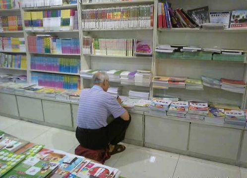
岁月．神偷 @ Jul 25, 2010
有些时候固执让人一旦确定了印象，比较难改变。比如对香港电影，接受不了大多数香港演员的演技，讲起话来一副是非脸，另外，他们的方言，与我们说同一句话，粤语10个音调下使用嘴唇的频率高于国语，絮絮叨叨得多。
但《岁月神偷》，让人喜出望外。符合当下怀旧复古风，以香港60年代为背景，故事情节平常又平凡，情绪上也没有大起大落，就是那种缓缓地，细密又稳重的一点点将观众的情感挖掘出来，悄无声息打动着你。同时也有那份对于我们小时侯生活的回忆。
“吴君如”一改笑星路线，演绎一位能说会道的贤惠妻母。她说如果5年前她可能不会接这样的角色。。。如果5年前我也体会不了这部电影的动人之处。“任达华”出演老实巴交，勤恳劳作，万千百姓中的一个小人物，演技非同以往。大儿子“罗进一”，一位美少年，他拥有世界上美好的一切，因为太美好，从形象到生活，所以他的遭遇给人的触动最强烈。导演“罗启锐”说电影中那个弟弟罗进二有他小时候的影子。
这部以60年代香港为背景的电影播出后，许多香港市民前往“永利街”送系黄丝带。本来面临拆迁的永利街，幸免于难，得以受到香港政府的保护。我们失去许多老街巷，失去的还有永远追不回的岁月。在幻变的生命里，岁月，是最大的神偷。
别忘记带上纸巾，当你准备观看《岁月神偷》的时候。
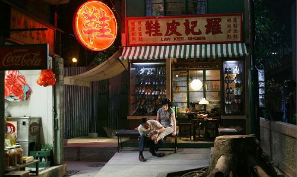
请注意这个场景，就是我们小时侯的记忆。

投粪手 @ Jul 22, 2010
我爱问连岳之“搞臭无用论”：有人喜欢这样维持关系：拖死他、去他的单位、他的朋友圈、去孩子前面，把他搞臭、搞臭、搞臭！成长为一个资深投粪手。恨一个人，是做得到这点的，但时日一长，同情票几乎都投给了他。赠人大便，手有余臭。把人搞臭是没有用的。（连岳）
资深投粪手，盛产于熟人圈。
你把别人搞臭，你自己就香了？
投粪手的基因会遗传吗？
对他们的后辈表示同情。。。
怀疑绝大多数投粪手，没什么兴趣爱好，更没有自己热爱并享受的生活。
这些夏天。。。 @ Jul 20, 2010
有了他们的夏天，这季节也没那么难熬。
putoo：“买好了野营地毯跟个小马灯，为将来的湖边煮茶~列个表：帐篷、蚊香、烧水器具、矿泉水2桶、零食、啤酒、烟、狗、驴车、卷筒纸...”
我不禁想起有人曾兴致勃勃要在自家大露台扎个帐篷，望山，观星，与虫鸣蛙叫相伴一宿。
箱子：记得高中后面有片芦苇荡，晚上我们逃开自习躲进去，全是萤火虫啊，当时为了和学长是哒，还请学长把时下流行的佳得乐饮料玻璃瓶盖戳了洞，逮了萤火虫进来养。。。
Sherry：夏天出门转悠，满眼都是美少女白花花的腿。短裙短裤加人字拖，组合成夏日热辣的马路风光。偶尔看到一个连衣裙淑女的背影，走过一回头，原来是个美孕妇啊。。
问问：小烂热夜。无人无风无清凉。我自盛一碗绿豆汤，温了，裹绵糖，饮爽淡，断肉念。继续何先生的上学记，艳羡他在乱世中有一段自由散漫的读书好时光。
小原子 ：趁着大雨点开到了大桥南堡，雨终于开始甩下了，下到看不清旁边倒后镜的情况，我要超车都抖活活的，刚过大桥的一半，雨突然小了，小到再开2步发现北堡路况根本没有水的痕迹，一路到家也没有下雨的样子，小摊贩照样卖着西瓜羊肉串。。。。就看我顶着水灵灵的车子进院子佬。
旗旗：夏天是绿豆粥，酸梅汤，玉簪花，秋海棠，小龙虾吃个遍，比谁的西瓜籽吐的远，知了像沸腾高压锅一样的叫声，荷花瓣放拳眼拍响的童年记忆，趿丫拖吃莲实，露大腿兼露蚊子包，鸟不畏人，草比人高，凉席什么的最讨厌了，空调打低，裹棉被乱梦到天亮（个别失眠且抽疯文青半夜起来画花也不是不可能）。
Maggie：今年西瓜真便宜,上周末买到5毛一斤的,回家高兴了一整天,今天居然买到了4毛的,也很甜.瓜农很无奈地说,没法子,城管追着抓,天天拖着瓜跑更亏!
shuwua:清早起来去爬山，起点就在楼旁。结果，爬到了南高峰。在山顶遇上老年登山队登顶成功，分享零食。我有幸尝了甘草青梅，华味亨的，很好吃，清甜甘草香，老伯说超市有卖，类似面包干的羊角蹄，圣女果干和内蒙古沙枣。结果池得意了，下山到了龙井村，走了几百米，打辆出租回宾馆。赶上早饭，吃了碗小米粥。
沈先生：童年的夏日夜晚，大人们会把竹子做的床或躺椅搬到院子里，用井水早早把西瓜冰镇起来。晚风习习中躺在竹床上仰望星空，充满幻想。那时一切都是纯自然的，低碳的！可如今我已几乎没有邻居的概念，也早已忘了乘凉这回事。
我的夏天则是吃西瓜、看电影看杂志、喝茶、散步，按时给植物浇水。。。每天既变换又稳定。印象最深刻的事儿是有一次和狗狗们外出散步的雨夜，遇到一条过路的蛇，好在狗狗们完全没有发现它，我浑身鸡皮疙瘩的跳过那条蛇，自那之后外出散步我换了球鞋。其实多数的夜晚遇到的是青蛙或癞蛤蟆，狗狗们凑近了嗅，它们一跳一跳的，狗狗们也跟着点头，直到失去兴趣。
狗狗身上的毛被剃了又剃，空调房间不爱呆了，晚上Luke独自睡在餐厅的墙角。那是它认为最凉快也最安全的地方。的确，没空调的时候餐厅最凉快，人家才不是傻大哥呢。中午被我训了一顿，眼神里满是哀怨。

近期观影单：
*** 《人在囧途》--最近看得最搞笑的一部。小成本制作，《投名状》的导演。不过中间穿插的孤儿救助女那段太牵强，情绪上出现停顿，不流畅。据说打败了好莱坞大片《罗宾汉》成为同档期票房黑马。与家人一起看很不错。
《Exam》（终极面试）--仍然是小成本制作，比《人在囧途》的制作成本还要少，只有一个场景：考试现场。因为时间原因分两个晚上看完。没看完的时候心里惦记着，到了第二天晚上兴致昂然...揭开神秘的面纱，不过如此。从未见过如此面试的场景，堪比生死之战。开始，觉得所谓精英就是没问题也会找出问题来纠缠，都想胜出的心理作用下，爆发出本质的人性，喜欢研究心理的人倒可以边看电影边琢磨。该片的导演也是位作家。
***《The Bounty Hunter》（赏金猎手）--看的时候难免会联想到Brad Pitt
和Angelina Jolie主演的《Mr. & Mrs. Smith》，甚至会将两位女主角不由自主地放在一起比较。。。每个人都有八卦的浅质？轻喜剧的《The Bounty Hunter》，讲述同一个真理：夫妻之战永远没有输赢之分。不过总是吵架跟情趣压根搭不上边，吵个几年，也索然无趣了，吵架多么伤神啊。所以电影还是电影，斗给观众看，夫妻之战加上凶杀侦破，倒也不算乏味。
***《Pergy Jackson & Olympians-The Lightning Thief》（波西-杰克逊与火神之盗）--哈利波特的现代版，导演也是哈利波特第一、二部的导演，用了希腊神话里的人物关系，人神生育的现代Demigod，主角清一色俊男靓女的青年。电脑特技比国内电视台正在播放的《倚天屠龙记》简直好了十万八前里，据说《倚天屠龙记》是张纪中拍摄的最后一部古装武侠剧，真是糟蹋了邓超。我特爱看象《Pergy Jackson & Olympians-The Lightning Thief》这样人神或人鬼的电影，既现实又神秘，尤其爱里面奇形怪状的神兽们。编剧是位教师，平时也写作，他的儿子非常喜欢阅读希腊神话，他为他儿子写了这本书，火了，有人来买他的版权拍了这部电影。估计还会有续集。强烈推荐。（这部电影貌似没有豆瓣们出现，一看到“扎堆”我就头大。）
***《Brooklyn's Finest》（布鲁克林警察）--通过三位警察的不同职业生涯，呈现出不同的价值观，道德观。豆瓣有句评价：“他们都醉了，他们都死了，他们都在路上相遇，在泥淖里挣扎，他们都无法左右自己，左右别人了。”我们的人生何尝不是这样？（本人看电影前基本不看影评，但每次更博搜电影连接，总会出现豆瓣们。）
《混混天团》--摇滚乐+黑社会？我都不相信梦想了，不知道生活在如此压力下的人们是否还有真梦想？
《The Losers》--不用动脑筋的美国片。女主角Zoe Saldana 是《Avatar》里的女阿凡达原身。

这张名为《内提力》(Neytiri)的手稿，为该片导演詹姆斯-卡梅隆亲手绘制，当时画出这样一幅图画是为了给影片设计人员一个创作方向。《内提力》是一张规格为17×22英寸的限量微喷印画，是50张手写编号限量版中的一张。这50张图每一张都分别有单独的卡梅隆的手写编号，而且还各自都有真品凭证，售价250美元，装裱后售价405美元。
茉莉花开 @ Jul 14, 2010
今天出太阳了，特别高兴。赶紧将茉莉花搬到朝南的窗台上。江苏民歌《茉莉花》，歌词写的是“好一朵美丽的茉莉花。。。”，我觉得它的外观并不美丽，它的美在于它的芬芳，实在是适合夏季的花朵。
原先盛开的荷花，昨夜便走到了尽头，花瓣飘落，露出鲜嫩的莲蓬，小花苞却比之前更茁壮。荷花开的快，谢得也快。早晨给植物浇水，看到两只彩色的鸟儿边飞边在捕食飞行的昆虫。大自然真是神奇的画师，从未停止过作画。
我，爱这样的早晨。
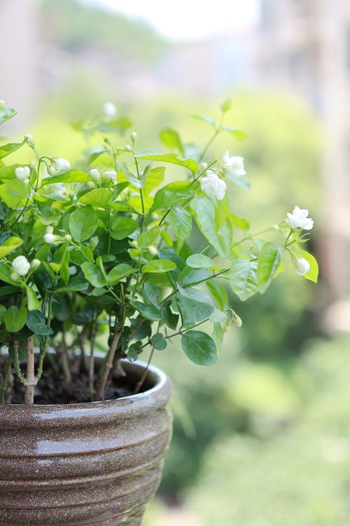
@Carl Liu设计 @ Jul 13, 2010
上海工设成员、著名设计师刘传凯先生（Carl liu）设计的“上海微风”扇子，囊括了很多上海知名建筑，太有想象力了。如果把南京的建筑也整成一把扇子，上面会是些啥？
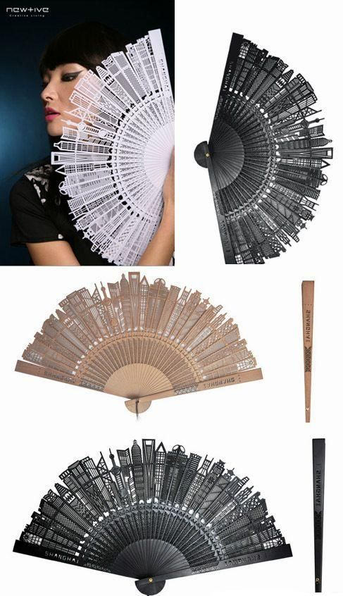
@草莽时代 @ Jul 13, 2010
西学东进： 近代， 中国历史发展较西方慢了一拍， 故中国所宣传和信仰的往往是西方前一个世代所流行的思想。
@沈萍:所以，人家讲绿色，我们讲GDP，人家讲家庭，我们讲二奶，人家晚上在家里度过，我们（很多人）的晚上在夜店里度过。。。人家讲诚信，我们讲“成功”。。。我们还在草莽时代。。。
夏。雨。菏。 @ Jul 12, 2010
在胖子砂锅巧遇问问，吃完砂锅，她走到她的汽车旁，打开后备箱给我看她搬来的茉莉与荷花，震住我唠，5个花苞，深受打击，前一天我搬回的那盆相比之下无比瘦弱，于是当天下午又去搬了一盆回来。。。依然是盆比花贵，但这次是移栽到盆里的。打算将瘦弱的那株淘汰给老爸。话说她打开后备箱的一刹那，那种交流的快感真是不言而欲呢。
下大雨的天气，最先入住的“瘦子”绽放出动人姿态，美得那么地不真实，象是画出来似的。哎，也许自己留着欣赏也挺好。无论养什么都需要了解和积累，即使它们不能顺利活过今年，对自己也是促进，明年再来。工作到中午，居然想念家中的荷花唠~
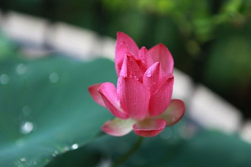
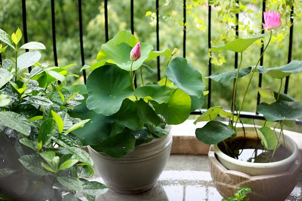

吃，在缘分到来时。 @ Jul 12, 2010
周末雄心壮志跟随“系出民门”的脚步，从升州路一路追到南湖。这些平常美食，过去也曾体会，倒未有情愫纠缠。如果人与美食也有缘分在其中的话，缘分到了，便生出爱来。
***“系出民门”之胖子砂锅***
由于信息错误，在文体路上开了个来回，最终在文体西路19号找到它。的确是位肚子浑圆的胖子老板，敞开式厨房面向小街，老板站在里面进行烹饪。店里四个桌子，十六张凳子，空调充足，还算干净。他家的砂锅区别在于，吃不出味精、鸡精的味道，咸淡适中。牛肉、牛筋松紧度炖得恰到好处，不因为小店，不因为是小食，而疏于用心。


***“系出民门”之章云烤鸭***
位于升州路与评事街交叉口，顾客排队的那家正是“章云烤鸭”。可以理解SHUWUA买了后边走边吃缘于何故，刚出炉的烤鸭的确要美味几分。南京烤鸭店数以千计，也可能数以万计？有谁统计过？在这座盛产烤鸭与盐水鸭的城市，能找到符合自己口味的鸭子店，还真需要花些功夫，靠口碑相传是生意之道，也为吃货们提供了觅食捷径。听问问说章云的盐水鸭也不错。
问问童话“胖子叔的鸭子店”的现实版便源于章云烤鸭对面的鸭子店。果然有位胖子叔，但没有问问画里的胖子叔慈祥阔爱，黑忽忽的面庞在没有灯光的橱窗后面更加灰暗，估计看到排队在别人家鸭子店前的顾客，心情更加灰暗吧？不免让人想到了“相从心生”。我貌似不经意地扭头瞥了一眼，胖子叔敏感地拿起大菜刀，在他的商品上轻轻切了一下，再平常不过的心理反应，如果你看过问问的这篇童话，这一幕会让人暗自发笑。


童话《胖子叔的鸭子店》里超级阔爱的胖子叔。

“章云烤鸭”所在的评事街，曾是南京历史上最繁华的地区之一，如今苟延残喘似乎走到了尽头，请看这篇《评事街的最后碎影》。南京这样的老巷子，越来越少了。


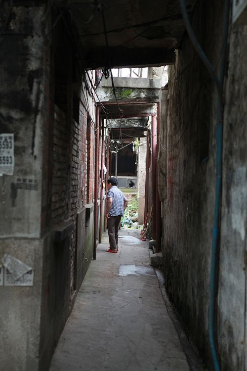
享受夏天。 @ Jul 10, 2010
中午做了几个菜，喝上一瓶雪花啤酒，边喝边说“快活哦，好吃哦”，好象喝傻了；

自从拜访过箱子家之后，对荷花念念不忘。终于下午搬回荷花一盆，无孔花盆少，在很少的范围内能挑到满意的不容易。最终挑了个有孔花盆，套在荷花盆外面，等以后有合适的再换。初次养荷花，不贪心不贪心，先养一盆试试。看着它，心里好安静啊。

这些幼年植物逐渐成长，代给我安慰。
图一：曾经向老爸讨要一盆薄荷，有次回家他给了我一盆，里面竖着2、3根枯枝。。。我就这么端回来。不过两三周时间，它已经长出俊摸样；
图二：箱子给的金边常青藤，拿来时4、5片叶子，在我家长出3片新叶子唠；
图三：从疯长的滴水观音里移植出两小盆，这是其中长得最旺盛的一盆，想着明年夏天是不是就可以分给朋友们几盆呢？
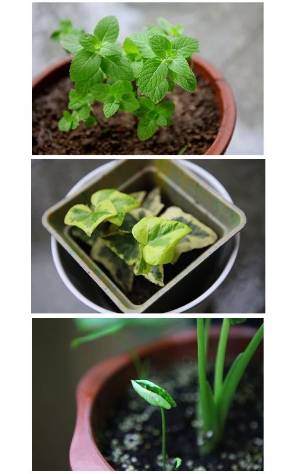
恍然间。。。 @ Jul 08, 2010
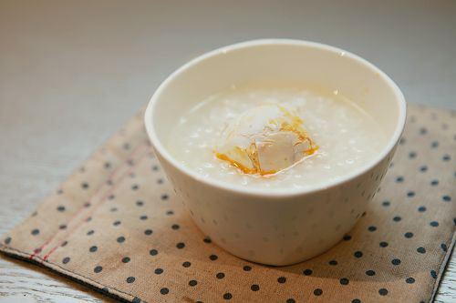
晚饭吃到嘴已经9点多。中午炖的白米粥，就着小菜、咸鸭蛋和烧饼，夏季餐只要清淡，怎么简单都能接受。无论白天多忙，晚上依然坚持看部电影，吃半个西瓜。
这两天不知是被内分泌还是工作闹腾的，很容易激动。事后又后悔，冷静下来想想也有更好的方法，干吗要发火呢？今天主动找人家沟通，对方没事似的说：“只要人nice，发点火算啥。。。”瞬间让我得到宽慰，不发火的人也有，如果不是修养特别好，那城府肯定不是一般的深，当然也不是什么好人。沟通好了理解了，感觉跟在西方电影里似的，呵呵，如果中国人相处都这么简单，多好。
“你最近怎么不去上海看世博。。。”
“我连南京城都不愿意多跑，更别说出城了。”
北京哥们儿结婚，有国际小乐队来助兴，据说还有些名气。婚礼在这个周六的上午10点开始，请了一堆朋友来参加，当然有李延亮，现在的他是不是长变形唠？饭局从明晚开始，先是朋友聚餐，然后是婚礼餐。想想就感到高兴，且蠢蠢欲动，那么多年没见的亲爱的们，现在都成啥摸样了？哥们儿用他那大舌头发着北京特有的卷舌音，说：“你老憋在南京干吗？你就不能来北京一趟吗？你要星期六早上到，你就甭来了，来了也没人接你。”即使在南京，大多数时候也是“憋”在家里，这世界上没有一个地方比憋在家里让我感到更舒心。据说女人到35岁才会玩够。。。过了30岁我才搞定自己，那颗总想外出撒野的心，恍然间就变了。现在的“我”让我感到轻松。
救的是谁的火？ @ Jul 07, 2010
你在火急火燎的救火，有人偏偏不在状态轻描淡写地撩下一句话，没有关心，没有救火的愿望，完全置身事外。这句话将你变成纵火犯。作为救火员，是不是会突然间爆发呢？答案是肯定的。不领情倒也没什么，问题是救的是谁的火？
我常对朋友说，别人没要求你帮忙，你最好什么都别做。最后你做的就变成是“你应该的”。年龄，是不是还可以用来解释面对问题所产生时的“不成熟”呢？我，有包容心，一般在我发完脾气之后。事情做了，脾气也发了，人也得罪了，结论是情商低的人可以出口到火星去。

DRESS BLOG @ Jul 06, 2010
“方脸，短脖子，圆肩膀，没腰，小腿粗，盘发象买菜的老太婆，长得菜，对于衣服品位低俗。。。”clara_001如此使劲儿的粉饰，真让人受宠若惊啊，太重视我了。这些形容我照单收下，实在是象卡通人物一样阔爱：D感谢鼓励。
替我问候你老爹老娘，生出这么个情商与智商如此绝配的人物，另外，甭再继续使用202.127.145.232，万一盛情难却，怎么办？：）
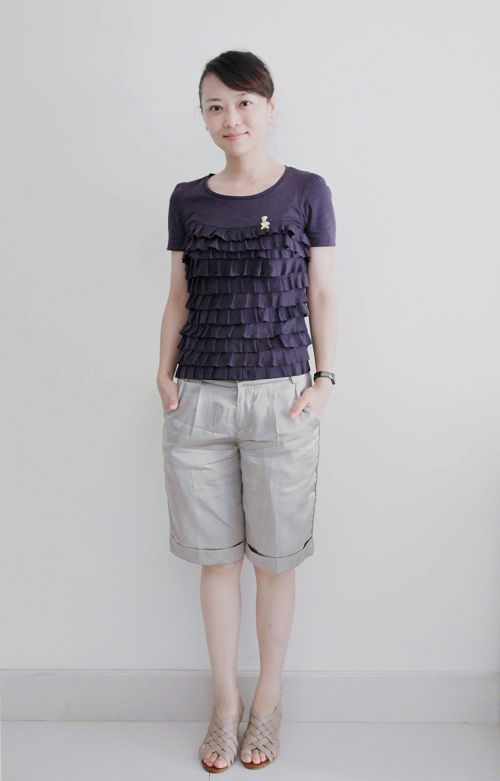

要知道，桶状也是一种身材。

只是“到此一游”。 @ Jul 05, 2010
“七一”活动地点：沙家浜。
牺牲周末一天时间，8：30出发，路上2个多小时车程。到达后即在“五福酒店”吃午饭，饭后被雷电交加的大雨困住，打牌、聊天及发呆来消磨时间，雨渐渐小时，出去转一圈。门票100元每位，折后55元。地方政府以旅游带动经济的想法，在这座人工园子里处处可见，肯定花了不少钱建造。
虽然下了雨，天气依然闷热，我既带了草帽又带了雨伞，还穿了长袖衬衣。浑身粘糊糊的不知是汗还是雨水，感觉糟透了，值得庆幸的是带的卡片机。看了下园子里处处是公款来活动的各单位党员同志，谁自己花钱跑这儿旅游，脑子估计缺氧了。往年活动去的茅山，那次我没去，据说也是极其无趣。形式主义，什么时候才能消失？

江南也有好景色；

新四军官方英文缩写；

不知哪个单位的党员活动，搞得象摸象样，拉起旗帜来拍集体照。一阵风吹过，我的鸡皮疙瘩又出来了。

耳熟能详的革命电影在这里也能寻找到踪迹；

样板戏居然有日文和韩文版本；
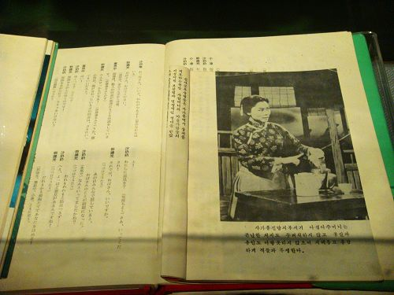
第三代“春来茶馆”，面对面怎么也找不到茶馆的感觉，就是一个商业铺子；

没来得及去看南京的荷花，在沙家浜倒遇到，美；


摇浆于芦苇荡间，船程不长，边上的水芦叶子可以包粽子，江芦叶子就不行了。

卡片机拍摄的合影照，每个人看上去都很美。
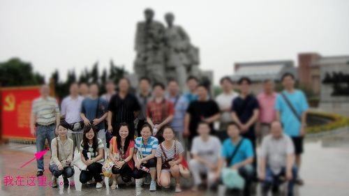
横泾小街，人工制造，人为做旧，实在无趣；
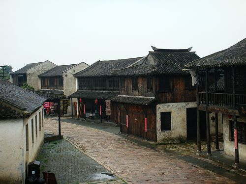
“武大郎炊饼”的吆喝：潘金莲制造，西门庆监制。买了四包准备送给JM们吃，回家自己先尝了尝，直接扔垃圾桶了。
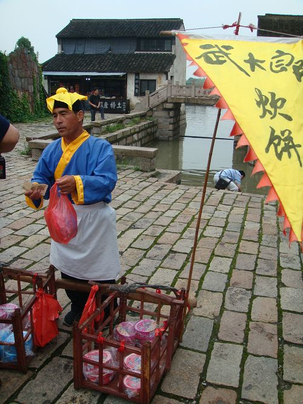
声色犬马中的“云南味道”。 @ Jul 02, 2010
还有十来分钟下班，满心扑向晚上的饭局，又是周末，美好的元素都有了。谈到吃不免想到《吃张爱玲的“软饭”》一文中提到有趣的尝试：名人宴。“张爱玲宴”的菜单，从早期的家常、中期的市井到晚年的苟且，尽量涵盖张的一生。“张爱玲宴”2006年在香港，近年在上海举办过。主厨也要研究一番原著才好。
原文写到： 难的是如何把这些零散在字里行间的“虱子”们逐一捉将出来，再按“前菜热菜汤主食点心甜品”之顺序，分门别类地绣成一袭华美的袍。好在，张的基本饮食习惯——“我和老年人一样，喜欢吃甜的烂的”、“她喝浓茶，吃油腻熟烂之物。饭菜上头却不悭刻，又每天必吃点心”——在总体上不难把握，牢牢吃准“油、甜、软”三字，一桌菜烧出来，八九不离十。《色｜戒》获金狮奖时，台北“点水楼”做的张爱玲宴，大玩索隐游戏，如名叫“倾城之恋”的菜，系以白流苏的“陈腐”对应范柳原之“西化”--生菜叶包臭豆腐此次“张宴”，宗旨是以乾嘉学派风格尽可能地还原张之白纸黑字、有凭有据的食谱，实行软饭硬吃。
通过“张爱玲宴”上的菜肴可以看出，张爱玲并非如很多读者想象中那样养尊处优，而是有很强的日常生活意味，甚至堪称平民化。这就是最重要的结论。
无论冠以何种名头来吃，吃的好不好，满足不满足是关键。朋友问“你有什么好吃的地方推荐吗？”我已经远离夜生活多年有余，属于OUT之人。想来没有什么是不能改变的，所有状况也随心而变。现状令人安逸，OUT也不失落。

************************云南味道************************
“云南味道”位于1912巷子的对面，家居楼的一层租用的房子，装潢的香艳，我们坐的位置处于空调下方，下面放着一个水桶接空调上滴下来的水。胃口倒没受影响，各自吃得欢畅，聊得开怀。周围三张台翻过三桌，我们才算结束这顿晚饭。
路过1912，望两眼，过眼云烟一般。
友说：“有了它南京的夜生活是多么的声色犬马，里面到底是啥样子？”
“我们陪你去一次就知道了。”
“估计进去后，所有人都看我们。”
“这么老，还到这种地方。。。”
或许这标准并不适合男人，男人要玩到50岁才会回归？
好吧，让男人们尽情地投入在这声色犬马中，好了。
藕条和干牛肉，味道象过去吃过的袋装锅巴，有人欢喜；

杏鲍菇、青椒炒香干；

青柠檬水；

打包外卖的加州鸡翅，那个辣。。。辣得人满头是汗，据说是干辣型口味；

地道的云南米线；

这道菜我最爱，开胃酸汤鸡，里面配有平菇、土豆片和酸梨；

我坐的位置正好斜对着墙上那副画，一抬眼便能望见。真正从照片上才看清楚到底怎么回事，原来在用手挠头发作痛苦状？

DRESS BLOG @ Jul 01, 2010
今天中午做了许多事儿，做了午饭，翻了杂志，喝了茶，拍了照，真好。

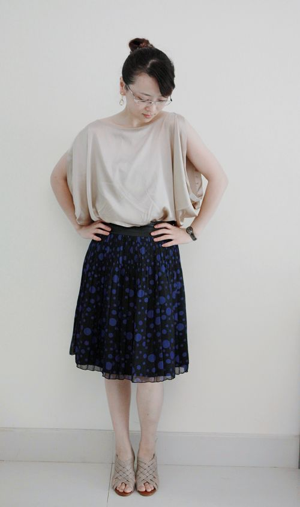

Rehab @ Jul 01, 2010
Rehab.mp3--Rihanna
baby baby
when we first met i never felt something so strong
you were like my lover and my best friend
all wrapped in one with a ribbon on it
and all of a sudden you went and left
i didn't know how to follow
it's like a shock that spun me around
and now my heart's dead
i feel so empty and hollow
and i'll never give myself to another the way i gave it to you
you don't even recognize the ways you hurt me, do you?
it's gonna take a miracle to bring me back
and you're the one to blame
and now i feel like....oh!
you're the reason why i'm thinking
i don't wanna smoke on these cigarettes no more
i guess that's what i get for wishful thinking
should've never let you enter my door
。。。。。。。
今日午饭 @ Jul 01, 2010
借鉴问问土豆粒烹饪法，没有豆瓣酱，清炒也不错。
另有西红柿汤一例，没有汤的夏季餐，总好象少了什么。
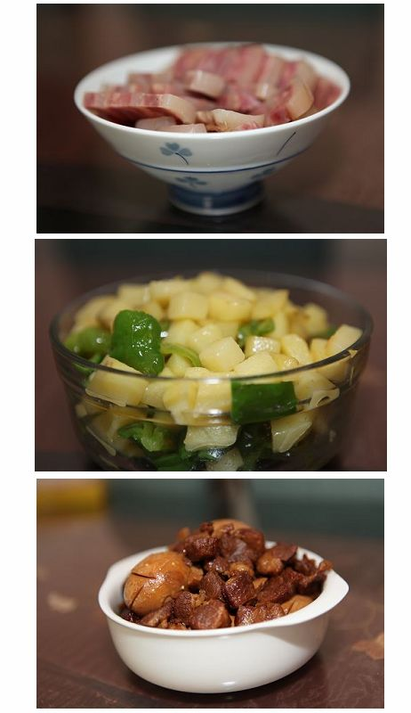